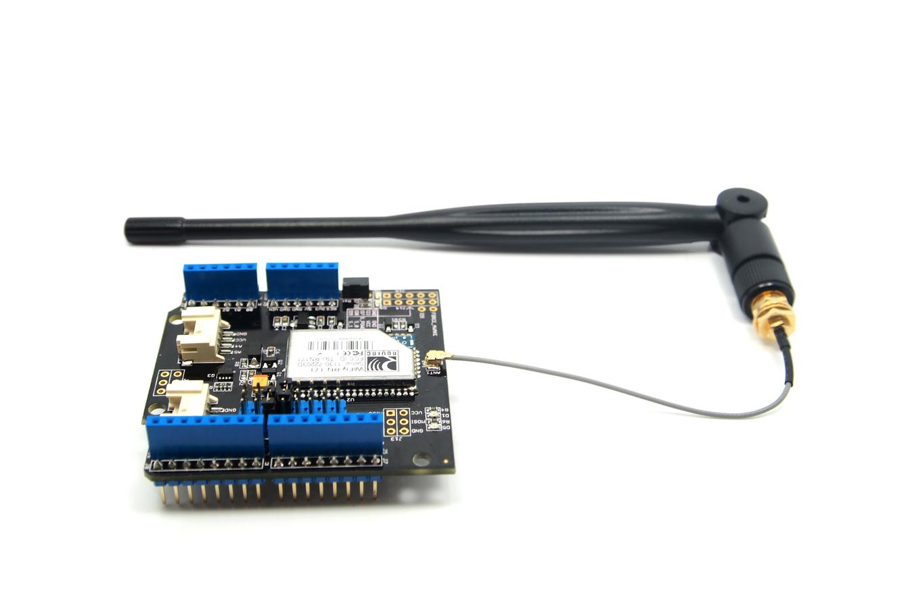
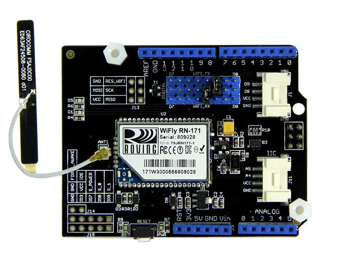

This Wifi Shield utilizes a RN171 wifi module to provide your Arduino/Seeeduino with serial Ethernet's function. It only takes two pins to hook your device up to 802.11b/g wireless networks with this shield. It features an independent antenna which can cover a wider range and transmit stronger signals. With supports for common TCP, UDP and FTP communication protocols, this Wifi Shield can meet needs of most wireless network projects, like smart home networks, robot controls or personal weather stations,etc. We prepared an easy and convenient command set for this shield so that you can use neat and concise code to run the function.
|  |  |
Here lists the comparison between various versions of WiFi Shield:
| Parameter | Wifi Shield V1.0 | Wifi Shield V1.1(v1.2) | Wifi Shield V2.0 |
|---|---|---|---|
| Voltage | +3.5V~+5V | +3.5V~+5V | +3.5V~+5V |
| Standard Shield | Yes | Yes | Yes |
| Communication Mode | Serial port | Serial port | Serial port |
| Standard Shield | No | Yes | Yes |
| Antenna Type | mast antenna | PCB antenna | onboard antenna |
| Library File | Wifi Shield Library V1.0 | New Wifi Shield Library | New Wifi Shield Library the same to v1.2 |